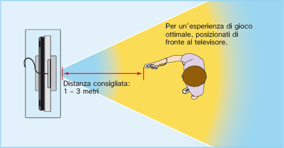

2 |
Precauzioni per l’uso |
 |
  Informazioni aggiuntive sull’uso del laccetto per telecomando Wii
L’utilizzo del telecomando Wii durante il gioco può richiedere movimenti rapidi o vigorosi. Utilizza il laccetto per telecomando Wii per evitare di perdere la presa del telecomando Wii e causare danni al telecomando stesso, alle persone o alle cose che si trovano nelle vicinanze.
Per maggiori informazioni su come utilizzare il prodotto in modo sicuro, consulta il capitolo "Uso del telecomando Wii" del manuale di istruzioni della console Wii: installazione.
 
Quando usi il Nunchuk, segui le avvertenze descritte di seguito per prevenire danni al prodotto, agli oggetti e alle persone che si trovano nell’area circostante.
Per maggiori informazioni su come utilizzare il prodotto in modo sicuro, consulta il manuale di istruzioni dell'accessorio. Se il Nunchuk non funziona correttamente, consulta il manuale di istruzioni o contatta il Centro Assistenza Nintendo.
Gioca in un ambiente con molto spazio libero!
Mentre usi il telecomando Wii, è probabile che tu esegua dei movimenti. Quindi, è importante che ti assicuri che tutto lo spazio in cui ti potresti muovere sia libero da mobili, oggetti o altre persone, per evitare di urtarli accidentalmente. Inoltre, come indicato nel manuale di istruzioni della console Wii, è consigliabile lasciare almeno un metro di distanza fra te e il televisore.

Queste informazioni sono disponibili all’indirizzo Internet
Molte persone non conoscono la differenza tra 50Hz e 60Hz, ma poiché la maggior parte dei televisori più recenti supporta i 60Hz, vale sicuramente la pena di scoprire se il tuo televisore è compatibile o meno. In parole povere, Hz (hertz) è l’unità di misura correlata al numero di frame per secondo (fps) che appaiono a schermo.
50Hz producono 25 fps mentre 60Hz circa 30 fps. La differenza potrebbe sembrare minima, ma l’aumento della qualità dell’immagine nel passaggio da 25 a circa 30 fps è piuttosto evidente a schermo. Grazie ai 60Hz otterrai immagini ancora più fluide, minore sfarfallio e velocità ottimale, per un’eccellente esperienza di gioco.
La modalità di default della console Wii è 50Hz (576i). Per attivare la modalità 60Hz (480i), selezionala in TIPO DI TV nelle impostazioni della console Wii. Tuttavia, alcuni televisori, in particolare i modelli più vecchi, non supportano tale modalità. Di conseguenza, alcuni giocatori potrebbero riscontrare delle difficoltà nel visualizzare il gioco. Per sapere se il tuo televisore è compatibile con la modalità 60Hz (480i), consulta il manuale di istruzioni dell’apparecchio o rivolgiti alla casa produttrice.
Se, dopo aver impostato la modalità 60Hz (480i), lo schermo dovesse apparire nero o presentare immagini distorte, è probabile che l’apparecchio TV non supporti la modalità 60Hz (480i). Per tornare alle impostazioni di default, premi RESET sulla console Wii tenendo premuta la pulsantiera + verso il basso. La console Wii si riavvierà in modalità 50Hz (576i). Per maggiori informazioni su come impostare il tipo di TV, consulta il manuale di istruzioni della console Wii: canali e impostazioni.
Inoltre, collegando il cavo RGB per Wii
 EDTV/HDTV (480p) è una modalità video a scansione progressiva, che permette di godere della migliore qualità grafica possibile. Ciò si traduce in immagini estremamente nitide, velocità ottimale e sfarfallio ridotto al minimo, per un’eccellente esperienza di gioco. Nintendo® desidera che gli utenti usufruiscano dei suoi prodotti nelle migliori condizioni.
È possibile, tuttavia, che questa modalità non sia utilizzabile: ciò potrebbe dipendere dal televisore o dal cavo. Per sapere se il tuo televisore è compatibile con la modalità EDTV/HDTV (480p) (scansione progressiva), consulta il manuale di istruzioni dell’apparecchio o rivolgiti alla casa produttrice. Prima di attivare questa modalità, assicurati di usare il cavo AV Component per Wii (RVL-011) (venduto separatamente) e che la modalità progressiva sia attivata sul tuo televisore.
La modalità di default della console Wii è 50Hz (576i). Per attivare la modalità EDTV/HDTV (480p), selezionala in TIPO DI TV nelle impostazioni della console Wii. Per maggiori informazioni, consulta il manuale di istruzioni della console Wii: canali e impostazioni.
|
 – NON LASCIARE LA PRESA DEL TELECOMANDO Wii. Se le mani diventano umide, interrompi il gioco e asciugale. Asciuga anche il telecomando Wii. Qualora eseguissi movimenti eccessivi e il telecomando Wii ti sfuggisse di mano, il laccetto per telecomando Wii potrebbe rompersi e potresti perdere il controllo del telecomando stesso. Ciò potrebbe causare danni alle persone o agli oggetti nelle vicinanze.
– NON LASCIARE LA PRESA DEL TELECOMANDO Wii. Se le mani diventano umide, interrompi il gioco e asciugale. Asciuga anche il telecomando Wii. Qualora eseguissi movimenti eccessivi e il telecomando Wii ti sfuggisse di mano, il laccetto per telecomando Wii potrebbe rompersi e potresti perdere il controllo del telecomando stesso. Ciò potrebbe causare danni alle persone o agli oggetti nelle vicinanze.
 |
 |
 |